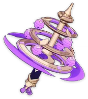
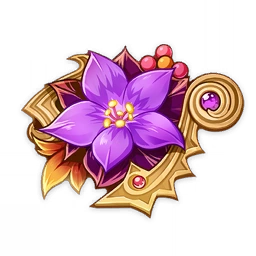

Construção de personagem: Lisa
Lisa Minci é uma personagem de jogável Electro em Genshin Impact. Ela é recebida gratuitamente no Prólogo Ato I: O Forasteiro que Voa a Favor do Vento durante a missão Faíscas Entre as Páginas.
Outrora uma grande maga reconhecida como o graduada mais ilustre da Academia Sumeru em 200 anos, Lisa voltou a Mondstadt para se tornar a humilde Bibliotecária dos Cavaleiros de Favonius.
História do Lisa
História-01
Lisa tiene la tarea de gestionar y organizar la gran colección de volúmenes que los Caballeros de Favonius tienen en su biblioteca,
además de garantizar que sus pociones estén siempre completamente abastecidas.
La única vez que los habitantes de Mondstadt ven a Lisa es cuando piden prestados libros o cuando los devuelven.
En ambos escenarios, encuentran a Lisa sentada en el mostrador como un gato lánguido, recibiendo y entregando libros mientras bosteza.
A veces, su comportamiento suscita dudas en la gente sobre si la bibliotecaria de los Caballeros de Favonius realmente puede permitirse el lujo de ser así.
Sin embargo, parece que realiza cada tarea a la perfección ya que su trabajo siempre logra resistir cualquier escrutinio.
História-02
El hecho de que Cyrus de la Academia Sumeru se refiera frecuentemente a Lisa como "la mejor estudiante en doscientos años" es todo lo que hay que decir sobre sus logros en los estudios de Lisa.
Ya sean conocimientos extraños y prohibidos, la gestión de la flora infundida con elementos o métodos más eficientes para destilar el vino... Si hay algo que saber, probablemente Lisa lo sepa.
Esto, por supuesto, convierte a Lisa en la persona más conocida y buscada entre los jóvenes caballeros y alquimistas.
...Es decir, si la buscan en horarios aceptables.
Visitarla en momentos inaceptables... como la mañana cuando Lisa duerme o la tarde cuando disfruta de la hora del té... podría ser un desastre para los visitantes no deseados.
Principais armas
As principais armas são as 5 estrelas sendo:

Caso não tenha armas 5 estrelas é possível usar as lanças:
Em ÚLTIMA opção é possivel usar o guia de magia, mas é recomendado trocar assim que possível
Principais artefatos
O melhor artefato para a Lisa é:

Caso não tenha, outra possibilidade seria:

Estatísticas primárias recomendadas
Areias: ATQ%
Cálice: Bônus de Dano Electro
Coroa: Taxa Crítica/Dano Crítico
Prioridade de subestatísticas
- Taxa Crítica
- Dano Crítico
- ATQ%
- Recarga de Energia
Talentos
NA:Ataque normal > Q:Ult > E:Habilidade
Melhores equipes Lisa
| Main |
Buffer |
Healer |
Sub Dps |
 |
 |
 |
|
| Main |
Sub Dps |
Sub Dps |
Shield |
 |
|
 |
 |
| Main |
Sub Dps |
Sub Dps |
Shield |
|
|
|
|
| Suporte |
Sub Dps |
Healer |
Shield |
 |
|
|
|